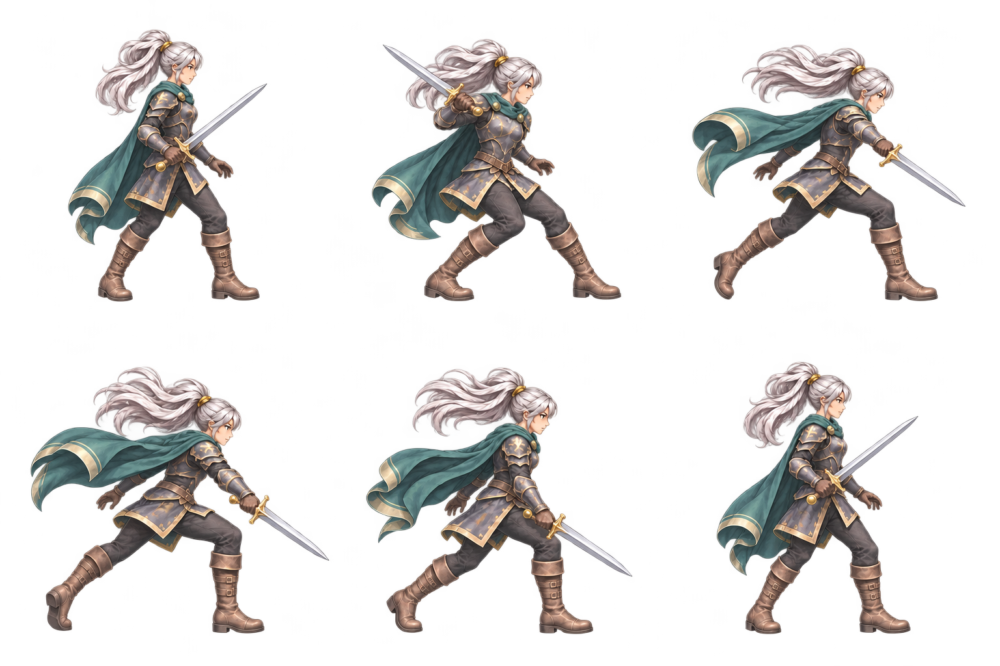

뒷발로 밀고, 몸통을 돌리고, 앞발로 받아내기. 이번에는 서로 다른 그림을 같은 리듬으로 비교합니다.
8포즈 · 동작 460ms · 타격 자세 시작 226ms
6포즈 · 동작 460ms · 타격 자세 시작 226ms
같은 시점으로 보기 0ms
준비할 때의 몸통 방향, 뒷발이 밀리는 순간, 앞무릎에 체중이 실리는 자세를 비교합니다. 준비 자세의 표시 높이를 맞췄고, 같은 모션 안에서는 크기와 기준점을 고정했습니다.
6포즈 후보라 회수 동작과 손의 그립은 더 다듬을 수 있습니다. 일반 실루엣 검사 미달과 알파 경고도 남아 있습니다.

검사 원문 · 재생 설정 · 동작 설계 프롬프트 · 6포즈 제작 프롬프트
기본 GPT 이미지 생성 · 검수 후보 · 게임에는 아직 반영하지 않음